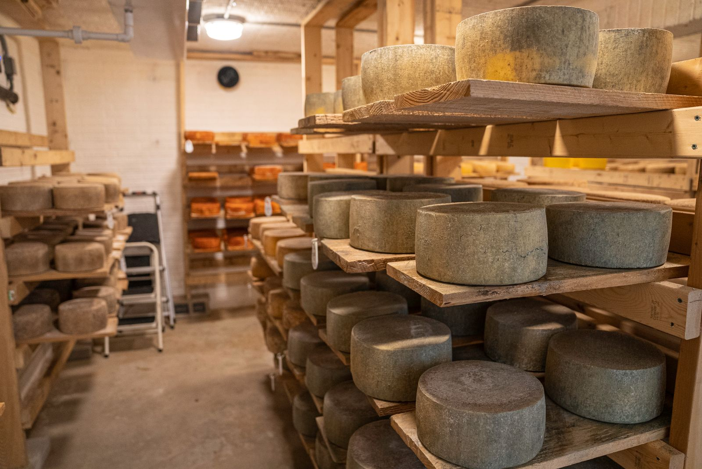
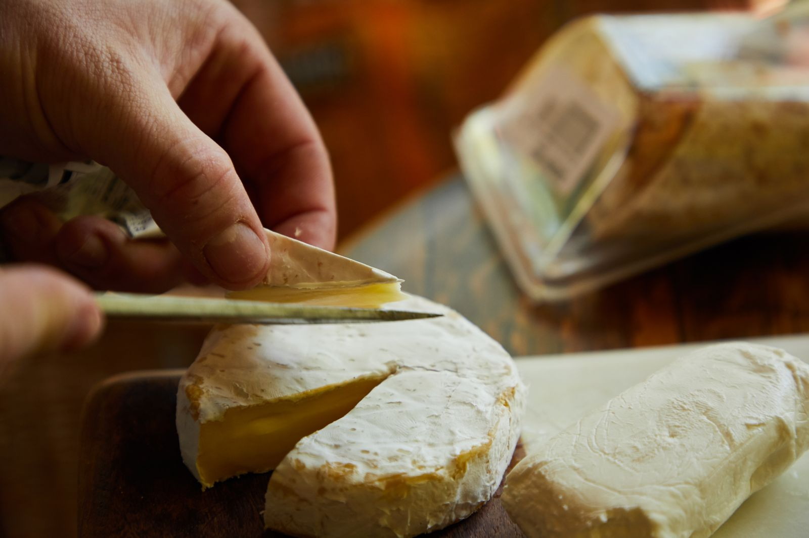
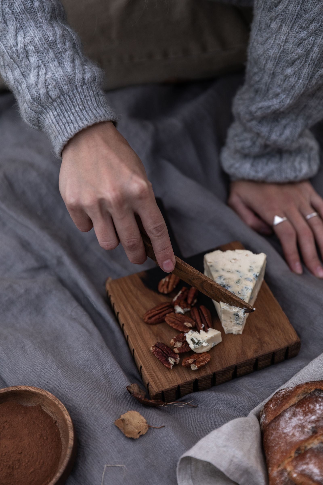
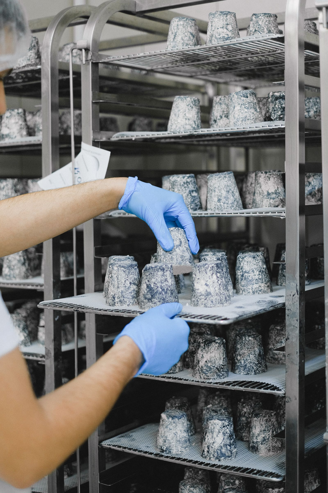
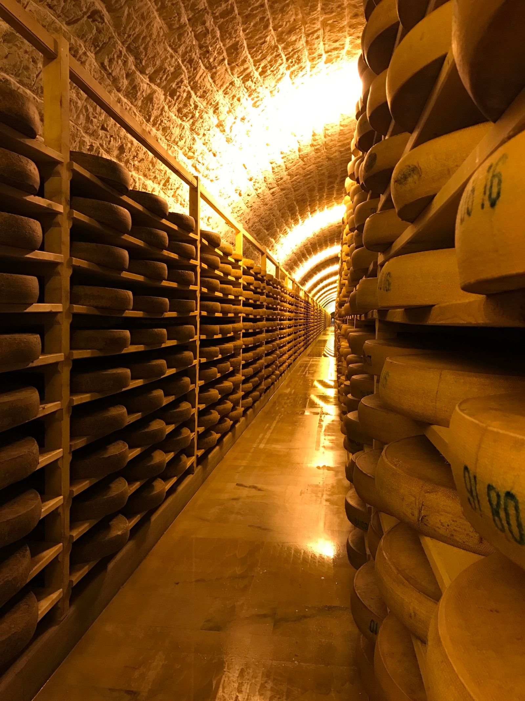
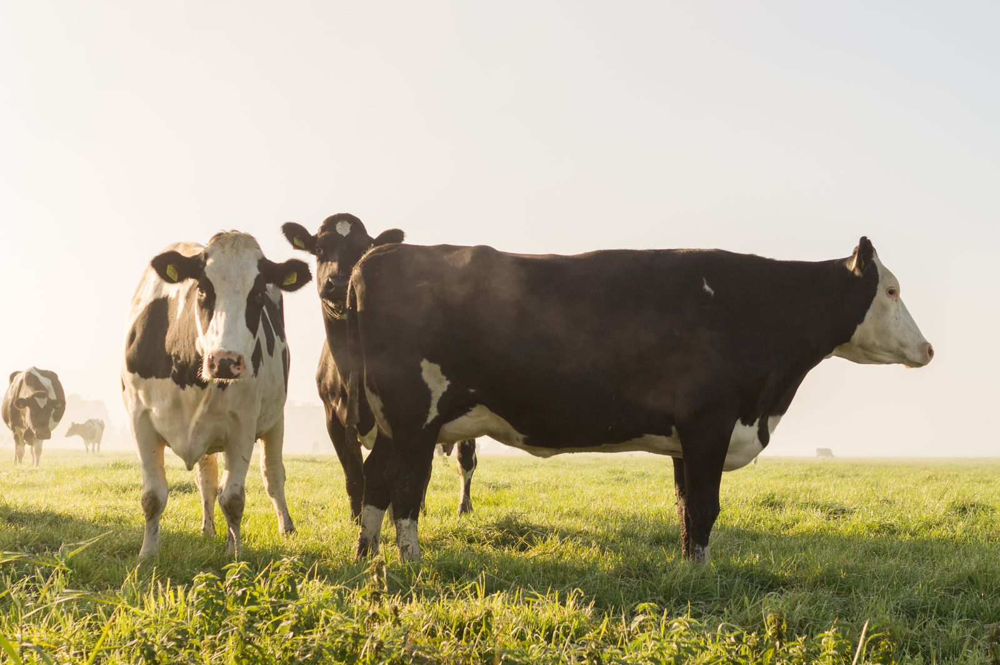

Bardanca tierno
Leche cruda de vaca · 20 días
El de todos los días. Funde bien, se pone en el bocadillo y se acaba sin darse cuenta.
- Peso
- 900 g
- Cuajo
- De cabrito
- Corteza
- Natural
- Precio
- 9,90 €
Obrador de leche cruda · Palas de Rei, Lugo · 40 piezas al día
Ahí está escrito todo: de qué vaca vino la leche, qué mes era, cuántas veces se volteó la pieza y cuánto tiempo estuvo en la cava. Nosotros solo la dejamos hacer.
01 La corteza
La misma leche, la misma cuajada y la misma sala. Lo único que cambia es cuántos días lleva en la cava. Elige un tiempo de cura.
Tierno · 20 días
9,90 € pieza de 900 g
Precios de muestra para esta demostración. La pieza pierde peso a medida que cura: por eso la de 400 días pesa menos y cuesta más.
02 Los quesos
Hacemos poco y siempre lo mismo. Cuando se acaba una hornada hay que esperar a la siguiente: no guardamos existencias para la tienda en línea.

Leche cruda de vaca · 20 días
El de todos los días. Funde bien, se pone en el bocadillo y se acaba sin darse cuenta.

Leche cruda de vaca · 90 días
El que más vendemos en el mercado. Corteza gris de moho natural, cepillada una vez por semana.

Leche cruda de vaca · 180 días
Aquí ya aparecen los cristales que crujen. Se corta fino y se come solo, sin pan que estorbe.

Leche cruda de vaca · 400 días
Solo de la leche de noviembre a febrero, que es la más grasa. Salen 120 piezas al año y se reservan.
03 La leche
Trabajamos con dos ganaderías de la parroquia, las dos de pasto. Cuando las vacas salen al prado, en abril, la leche sube de carotenos y la pasta del queso se pone amarilla sola. En invierno, con silo y heno, la leche es más grasa y el queso aguanta mejor una cura larga.
Por eso el queso de invierno solo se hace en invierno. No es marketing: es que en julio no sale igual.
04 La cava

La cava está medio enterrada en la ladera, que es lo que hace el trabajo de frío casi todo el año. Las tablas son de pino sin tratar; se lavan a mano y se secan al sol, porque una tabla barnizada no deja respirar a la pieza.
Cada pieza se voltea y se cepilla a mano dos veces por semana el primer mes, y una vez por semana el resto de su vida en la cava. Eso son casi sesenta veces en un queso de invierno.
05 Dónde comprar
Comprobando el horario…
| Lunes | Cerrado |
|---|---|
| Martes | Cerrado |
| Miércoles | 10:00 – 14:00 · 16:30 – 19:30 |
| Jueves | 10:00 – 14:00 · 16:30 – 19:30 |
| Viernes | 10:00 – 14:00 · 16:30 – 19:30 |
| Sábado | 10:00 – 14:00 |
| Domingo | Cerrado |
En la tienda hay siempre las cuatro piezas, cortadas al peso o enteras. Si quieres una pieza concreta de la cava, avisa el día antes.
Martes9:00 – 14:00
Puesto de la esquina, junto a la carnicería.
Jueves9:00 – 14:00
Segundo pasillo, puesto 14. Es el día que llevamos más curado.
1.º sábado10:00 – 15:00
Solo el primer sábado de cada mes, y en agosto no vamos.
Mandamos a toda la península en frío, los martes. Pedido mínimo de dos piezas, 7,50 € de transporte, gratis a partir de 60 €. Se encarga por teléfono o WhatsApp; no hay tienda en línea porque no queremos vender lo que no hay.
06 Visitas
Enseñamos el obrador los viernes por la mañana, cuando se cuaja. Se ve la leche entrar, cortar la cuajada, llenar los moldes y bajar a la cava. Dura una hora larga y acaba con una cata de los cuatro quesos.
Hay que entrar con calzado cerrado y bata, que la damos nosotros. En la sala de cuajado no se puede entrar con perro.

Notas de muestra, escritas para esta demostración. No proceden de ninguna plataforma ni de ningún cliente real.
«Vine a por uno tierno y me fui con el de invierno. Cosas que pasan cuando te dejan probar.»
«Los críos se pasaron la visita entera mirando la cuajada. Ni un móvil en hora y cuarto.»
07 Contacto
El obrador está a cuatro kilómetros de Palas de Rei, por la carretera de Monterroso, y hay un cartel de madera en el cruce. Se llega en coche; el autobús no pasa por aquí.
En un obrador de verdad, aquí iría el número de registro sanitario. Esta demostración no inventa ninguno.